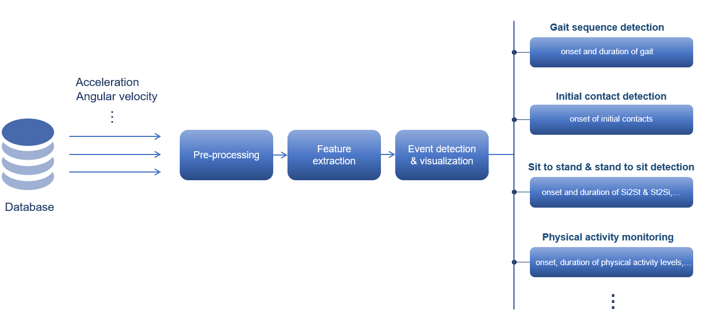

KMAT: Kiel Motion Analysis Toolbox - An Open-Source Python Toolbox for Analyzing Neurological Motion Data from Various Recording Modalities
![]()
Summary
The Kiel Motion Analysis Toolbox (KMAT) is an open-source Python-based toolbox designed for processing human motion data. KMAT provides a comprehensive suite of algorithms for motion data processing in neuroscience and biomechanics, including gait sequence detection, initial contact detection, pyhisical activity monitoring, etc. These algorithms assist in assessing human motion data and identifying abnormalities, facilitating diagnosis and treatment planning for individuals with mobility impairments. The modular design of KMAT allows for flexibility and scalability, making it suitable for a wide range of applications in human motion analysis research.
Statement of need
The analysis of human movement is critical for neurological assessment (Micó-Amigo et al. 2023). Human motion characterization is crucial for overall well-being, encompassing our physical, mental, and social dimensions. The increasing prevalence of mobility-limiting diseases, such as Parkinson’s disease (PD), poses a serious burden on healthcare systems (Mahlknecht et al. 2013). Wearable devices such as inertial measurement units (IMUs) allow for long-term monitoring of disease progression and could, therefore, be used to track changes in gait (Mazzà et al. 2021). While many studies have focused on a single IMU worn on the lower back, they often used not freely available software to extract data (Micó-Amigo et al. 2023). The development of easy-to-use and open-source code implementations is imperative for large-scale data extraction in research and clinical settings. KMAT addresses this gap by providing diverse algorithms for human motion data analysis, catering to motion researchers and clinicians and promoting the utilization of open-source software. KMAT encompasses a broad range of validated algorithms such as gait sequence detection, initial contact detection, and physical activity monitoring. While not exhaustive, ongoing efforts aim to include additional validated algorithms, such as sit-to-stand, stand-to-sit, etc.
Provided Functionality
KMAT offers practical examples demonstrating the application of currently implemented algorithms, focusing on gait sequence detection and initial contact detection. The toolbox utilizes IMU sensor data from clinical cohorts, such as those with congestive heart failure (CHF) (Micó-Amigo et al. 2023). Participants undergo real-world assessments, engaging in daily activities and specific tasks, including outdoor walking, navigating slopes and stairs, and moving between rooms.
The data were processed using our gait sequence detection module, based on the Paraschiv-Ionescu algorithmParaschiv-Ionescu, Soltani, and Aminian (2020), to identify gait sequences within the time series. Subsequently, our initial contact detection module , also based on the Paraschiv-Ionescu algorithm Paraschiv-Ionescu, Soltani, and Aminian (2020), was applied to identify initial contacts within the detected gait sequences. Utilizing lower back acceleration data from the Mobilise-D dataset, we demonstrate the accurate identification of gait events such as gait onset, gait duration, and initial contacts. KMAT offers practical examples demonstrating the application of currently implemented algorithms, focusing on gait sequence detection and initial contact detection. This example illustrates the practical application of our toolbox in analyzing human gait patterns which is shown in figure 1.
Figure 1: Acceleration Data and Detected Gait Events using KMAT Modules
In figure 1, we present a detailed analysis of acceleration data from the lower back, highlighting the key gait events detected by our modules. The green vertical line indicates the onset of a gait sequence, while the shaded gray region represents the duration of the gait sequence. Additionally, blue dashed lines denote the detected initial contacts within the gait sequence.
Installation and usage
The KMAT package is implemented in Python and is freely available under a Non-Profit Open Software License version 3.0. The stable version of the package can be installed from PyPI.org using pip install kmat. Our documentation provides detailed instructions on installation and some tutorial notebooks.